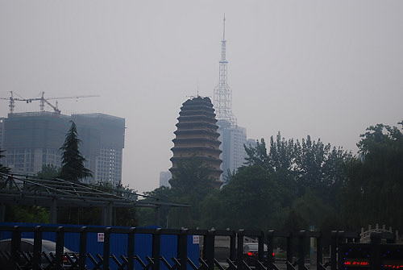

|

We didn't go any closer because it began to rain and Tony was afraid there were too many stairs. The Little Wild Goose Pagoda is a Buddhist pagoda located about 1 kilometers south of Jianfu Temple in Xian City of Shaanxi Province. Along with the Big Wild Goose Pagoda, it was an important landmark in Chang'an, capital of the Tang Dynasty (618-907). Since it was smaller and built later than the Big Wild Goose Pagoda, it was named the Little Wild Goose Pagoda. |